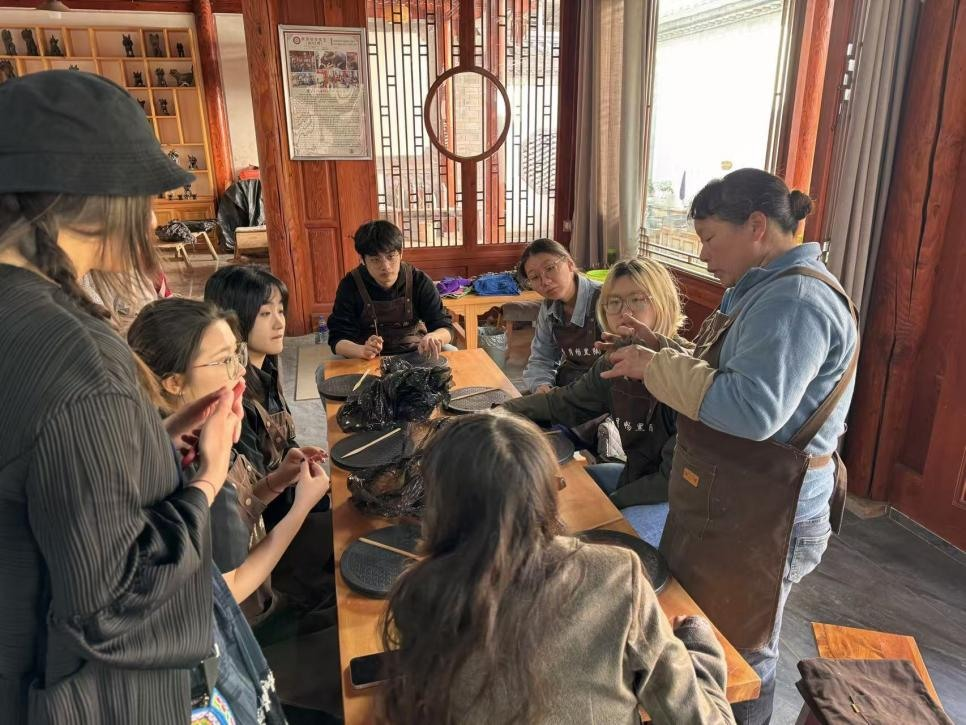
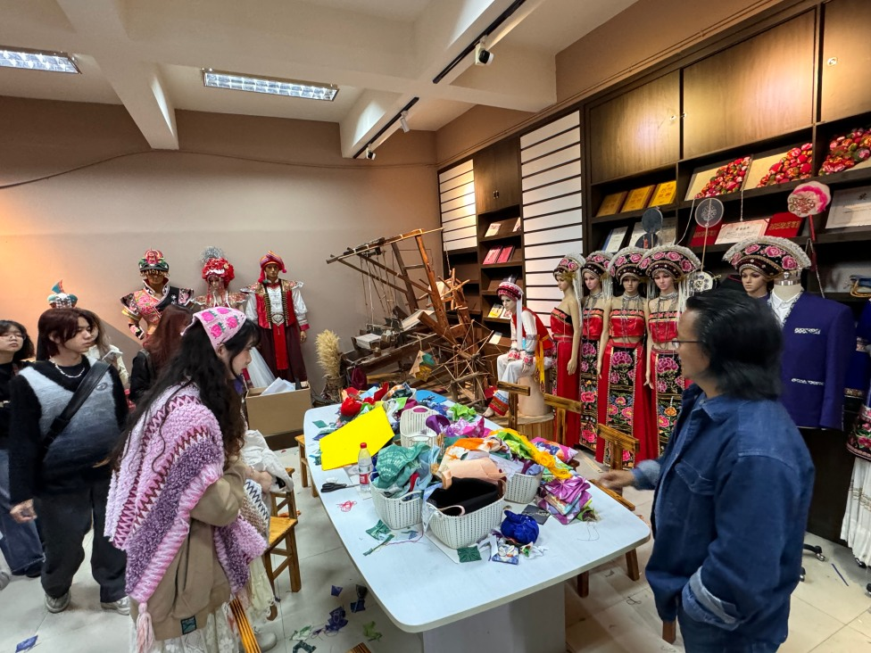
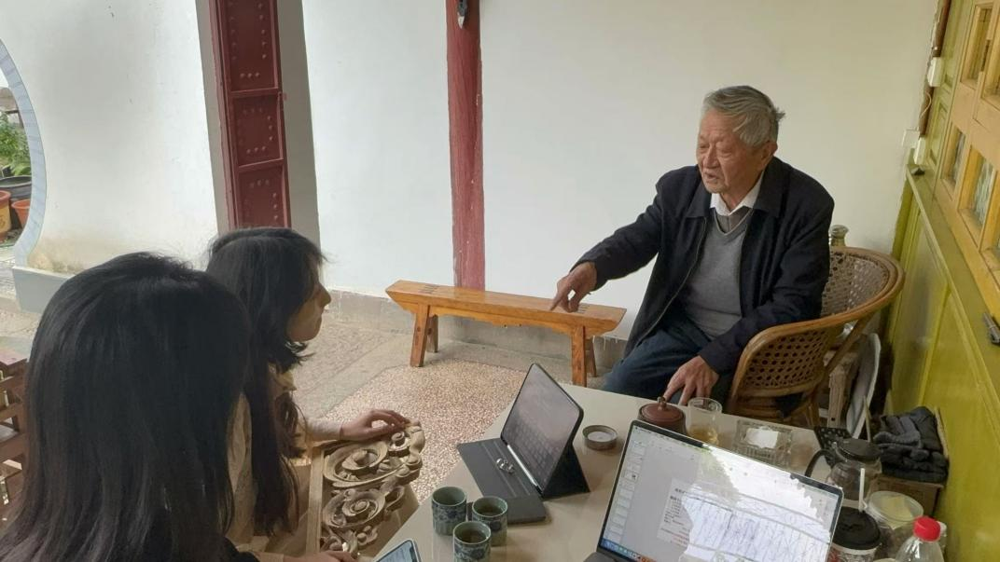
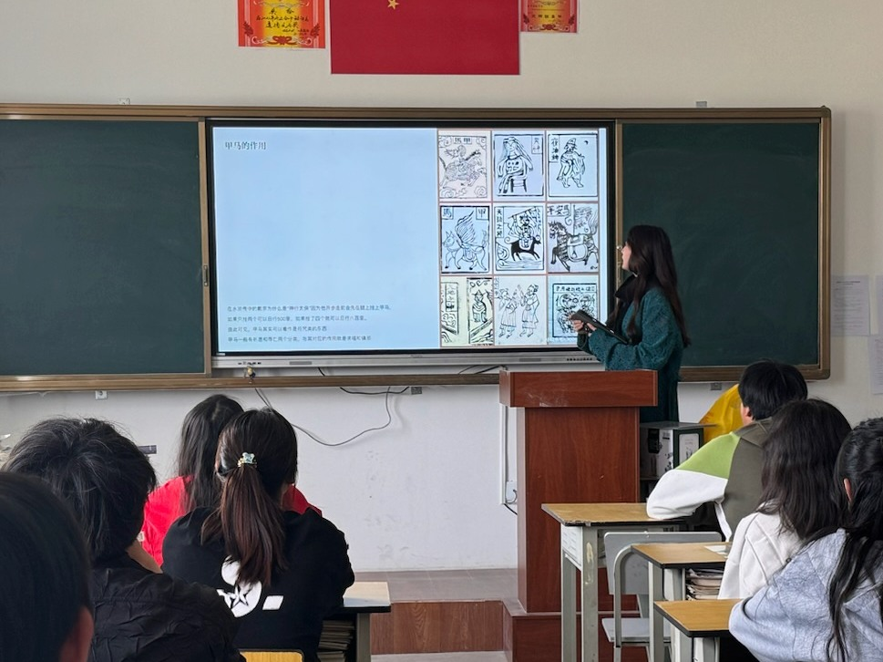
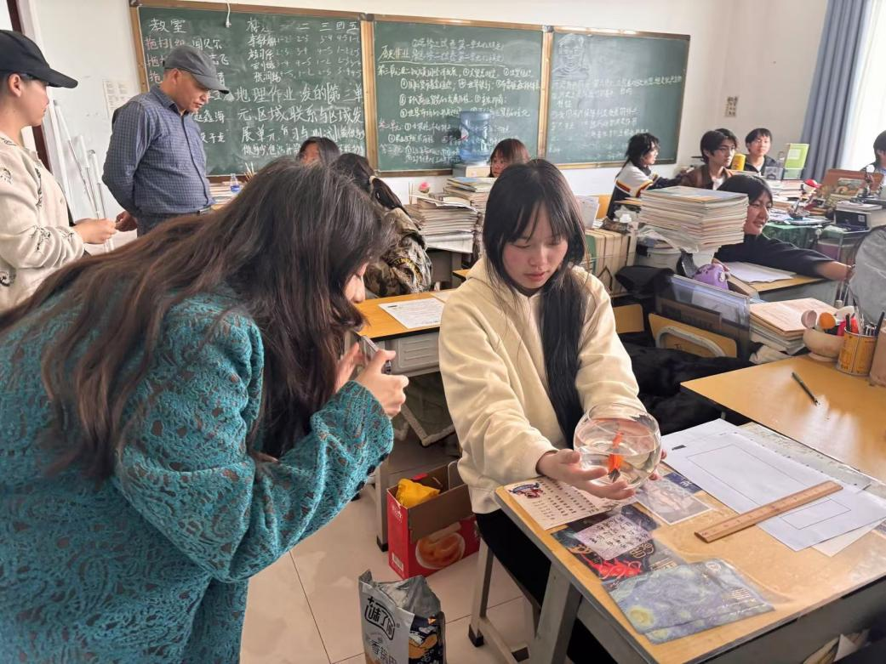
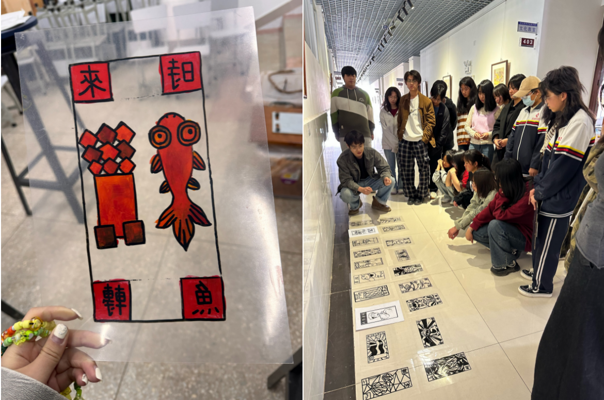
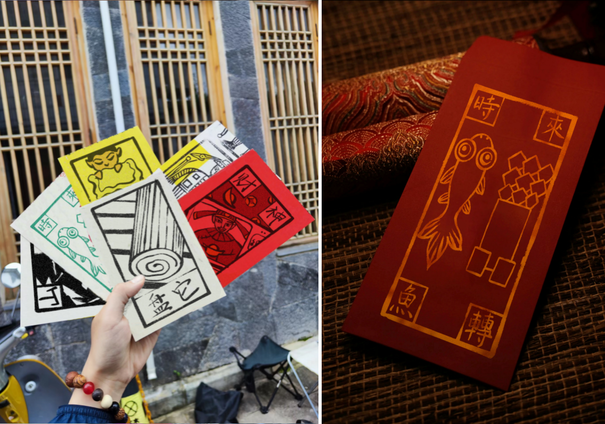
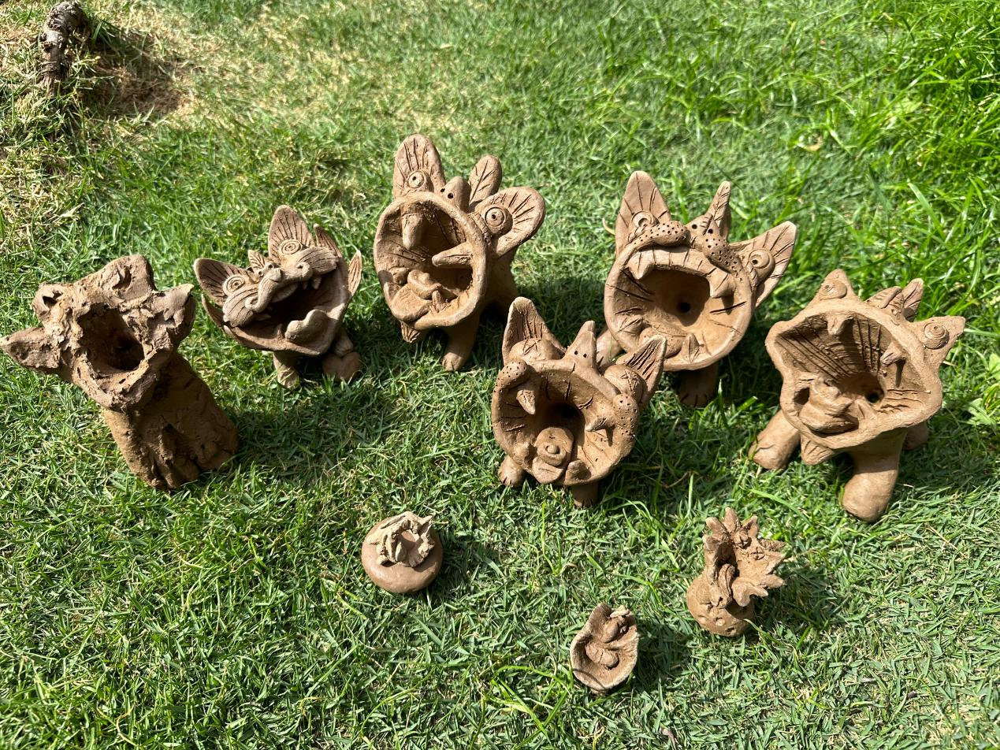
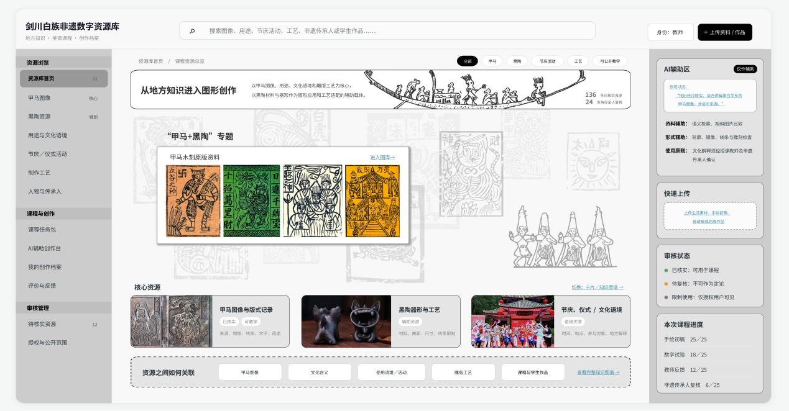
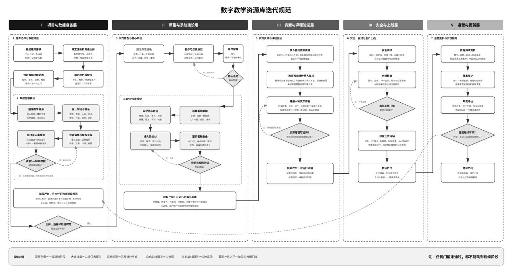

Connecting local craft, personal experience, and contemporary design in Jianchuan, Yunnan.
Abstract
As heritage-based art education develops, short, intensive workshops have become an important way to bring intangible cultural heritage into schools. Such workshops often face limited teaching time, fragmented cultural understanding, costly trial and error, and insufficient feedback on the learning process. Drawing on a 2024 Bai heritage art education workshop in Jianchuan County, Yunnan, this paper reviews the teaching process and explores how digital technologies could support curriculum development around Jiama image design and black-pottery carving. Although digital tools can help organize the pace and continuity of learning, they should remain supportive: student agency, cultural authenticity, and educational ethics must guide their use. The case offers practical insights for improving local heritage art education.
Keywords: Heritage art education; digital support; Bai intangible cultural heritage; curriculum development
A locally grounded workshop
Jianchuan County in Dali, Yunnan, is home to a rich range of intangible cultural heritage, including woodcarving, Jiama woodblock prints, Baiqu singing, and black pottery.
Working with local partners in Jianchuan, the project connected Bai cultural heritage with art and design education. Workshops invited high-school students to bring their own lived experiences into traditional Jiama imagery and black-pottery making.
From image to material
Students developed drawings, simplified motifs, and explored how graphic decisions translate into carving. The project linked cultural learning to hands-on material practice, with students’ personal stories providing a starting point for design.
Reflection and digital resources
A subsequent research paper reflects on the short workshop format and proposes digital support for organizing teaching resources, comparing design alternatives, and documenting learning. These proposals build on the workshop rather than describe a fully deployed digital teaching system.

Firsthand experience of heritage black-pottery making.

Fieldwork on local customs.

In-depth interviews with knowledgeable local scholars.

Facilitating a Bai heritage workshop.

Classroom discussions.

Workshop outcomes.

Cultural and creative products designed by Indigenous students.

Bai heritage Wamao (roof-tile cats) made by learners.

A digital teaching resource library documenting processes and outcomes.

Guidelines for updating the digital teaching resource library.